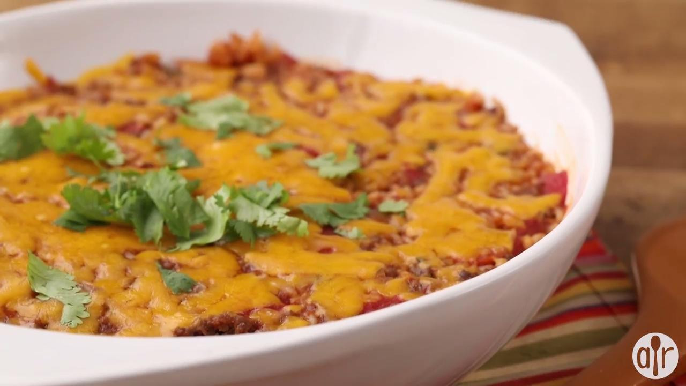

Spanish rice bake recipe

Ingredients
- 1 pound lean ground beef
- ½ cup finely chopped onion
- ¼ cup chopped green bell pepper
- 1 (14.5 ounce) can canned tomatoes
- 1 cup water
- ¾ cup uncooked long grain rice
- ½ cup chile sauce
- 1 teaspoon salt
- 1 teaspoon brown sugar
- ½ teaspoon ground cumin
- ½ teaspoon Worcestershire sauce
- 1 pinch ground black pepper
- ½ cup shredded Cheddar cheese
- 2 tablespoons chopped fresh cilantro
steps
- Preheat oven to 375 degrees F (190 degrees C).
- Brown the ground beef in a large skillet over medium-high heat. Drain excess fat and transfer beef to a large pot over medium low heat.. Stir in the onion, green bell pepper, tomatoes, water, rice, chile sauce, salt, brown sugar, cumin, Worcestershire sauce and ground black pepper.
- Let this simmer for about 30 minutes, stirring occasionally, then transport this to a 2-quart casserole dish. Press down firmly and sprinkle with the shredded Cheddar cheese.
- Bake at 375 degrees F (190 degrees C) for 10 to 15 minutes, or until cheese is melted and bubbly. Garnish with chopped fresh cilantro.
go back to the index